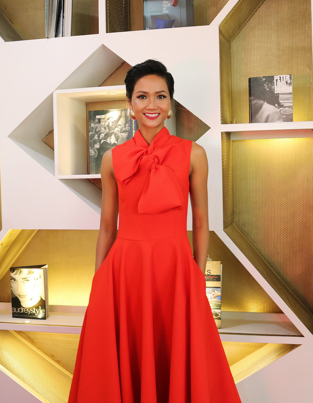
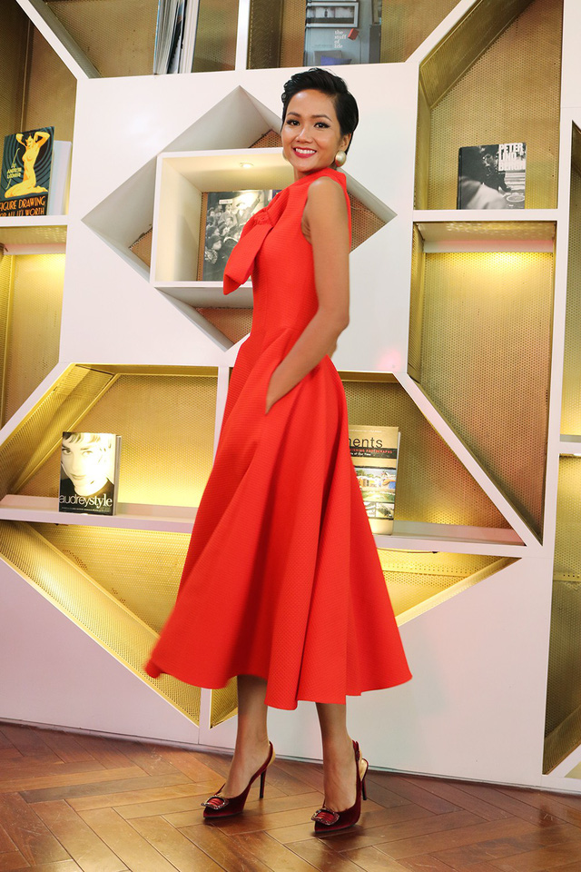

“Hiện tại tôi đã sử dụng hết số tiền của mình để đi làm từ thiện và chỉ dành riêng cho mình 20 triệu để gửi lại cho xã để họ có thể làm đường hoặc làm đèn điện đường, kỷ niệm mà tôi muốn dành cho quê hương. Có thể nói số tiền thưởng tôi đã nhận đủ và đã “phân tán” đúng mục đích hết (cười)!” , hoa hậu Hoàn vũ Việt Nam H’hen Niê chia sẻ cô đã sử dụng toàn bộ tiền thưởng cho mục đích từ thiện.
Đầu năm 2018, tân Hoa hậu Hoàn vũ Việt Nam H’hen Niê là một trong những nhân vật truyền cảm hứng tích cực cho cộng đồng. Đầu Xuân Mậu Tuất, H’hen Niê đã dành cho Dân trí một cuộc trò chuyện khá cởi mở về cuộc sống của cô sau đăng quang.

Thời gian sau khi đăng quang Hoa hậu cho đến nay, H’hen Niê trải qua cuộc sống như thế nào?
Ngay sau khi đăng quang tôi có lịch trình khá dày, tôi phải đi theo đúng các lịch công việc do BTC lên kế hoạch từ trước nên những lịch trình cá nhân của tôi vẫn chưa được thực hiện được.
Tôi có những dự định tập luyện kỹ năng để dành cho việc tham gia vào cuộc thi Hoa hậu Hoàn vũ Thế giới chưa thể sắp xếp và tập luyện được. Điều đó khiến tôi khá tiếc nuối. Nhưng những điều gì đã xảy ra rồi không thể nào thay đổi được, tôi mong rằng thời gian tới mình có thể sắp xếp được lịch trình để có thể bước vào luyện tập.
Vậy chị có cảm thấy cuộc sống của mình thay đổi nhiều ngay sau khi đăng quang?
Tôi vẫn cảm thấy cuộc sống của mình không có gì thay đổi nhiều cả. Chỉ là khá bận rộn với lịch trình công việc dày đặc hơn thôi (cười).
Trước khi đăng quang Hen đã hứa sẽ sử dụng 70% tiền giải thưởng để làm từ thiện, điều này Hen có hoàn thành chưa? Đặc biệt là phía gia đình có ý kiến gì không?
Tôi rất hạnh phúc khi mẹ mình là một người tâm lý. Khi tôi nói những dự định của mình trong tương lai bằng tiếng Kinh, mẹ không thể hiểu hết được tất cả mà phải nghe từ phía các chị, các cô dịch lại.
Sau khi tôi đăng quang khoảng một tuần, mẹ có gọi điện và nói với tôi rằng khi tôi nhận được tiền thưởng điều đầu tiên tôi phải làm đó là những công việc hỗ trợ xã hội, những điều mà tôi đã hứa trước tiên. Sau khi nghe được những lời nói đó tôi đã rất hạnh phúc và tôi hứa với mẹ chắc chắn sẽ sử dụng toàn bộ số tiền thưởng của mình cho quê hương.
Tuy rằng số tiền thưởng đấy đối với tôi rất lớn và cần thiết dành cho gia đình mình, nhưng nếu như mình biết dành cho những người khác có hoàn cảnh khó khăn hơn mình sẽ có ý nghĩa và tốt hơn rất nhiều.
Hiện tại, tôi đã sử dụng hết số tiền thưởng để đi làm từ thiện và chỉ dành riêng cho mình 20 triệu gửi lại cho xã nhà để họ có thể làm đường hoặc làm đèn điện đường, đây là một kỷ niệm mà tôi muốn dành cho quê hương.
Có thể nói số tiền thưởng tôi đã nhận đủ và đã “phân tán” đúng mục đích hết (cười)!
Không giữ lại gì cho mình, liệu cuộc sống có đủ cho Hen chi xài?
Tôi nghĩ là có, bởi vì ngay sau khi tôi đăng quang đã có khá nhiều nhãn hàng quần áo, giày liên hệ để hỗ trợ hình ảnh cho tôi. Tôi cũng biết rằng mình cũng phải hỗ trợ hình ảnh cho họ và tôi sẵn sàng cho điều đó, vì đây là những điều qua lại.
Tôi thấy mình còn thiếu rất nhiều thứ nên khi nhận được những sự hỗ trợ đấy khiến tôi cảm thấy mang ơn và hỗ trợ ngược lại nhiệt tình.
Rồi khi tôi nhận lời tham gia nhiều chương trình họ cũng có gửi lại hỗ trợ, những khoản thu này tôi gom góp lại thấy mình sống cũng thoải mái (cười).
Sau khi đăng quang cũng không ít sự so sánh giữa chị và người tiền nhiệm – Hoa hậu Phạm Hương, điều này có khiến chị cảm thấy phân vân và lo lắng?
Khi bị đưa ra so sánh tôi nghĩ rằng đó là một điều hiển nhiên dành cho tân hoa hậu. Nhưng tôi nghĩ rằng mình và chị Phạm Hương là hai người hoàn toàn khác nhau, từ nhan sắc cho đến lý tưởng. Chị ấy đẹp theo một kiểu khác còn tôi thì lại có những nét khác. Kể cả hướng hoạt động cộng đồng của tôi và chị ấy cũng khác nhau.
Chị ấy là một người rất thành công từ những cái hoạt động xã hội đến hoạt động thương mại và là một tấm gương để tôi học hỏi, cố gắng rèn luyện hoàn thiện bản thân mình.

Chiếc vương miện hoa hậu có khiến chị trở nên tự tin hơn?
Không. Tôi không nghĩ rằng việc mình đội trên đầu một chiếc vương niệm có thể khiến bản thân mình tự tin hơn mà là phải từ chính bản thân mình. Còn vương miện sẽ đem đến cho tôi danh hiệu để mình có thể thực hiện lí tưởng dễ dàng hơn.
Tết năm nay gia đình tôi sẽ đầm ấm hơn
Đón Tết năm nay của chị có nhiều sự thay đổi khi là đương kim Hoa hậu Hoàn vũ Việt Nam 2017 không?
Năm nay có khác biệt hơn so với mọi năm nhiều bởi Tết năm nay vui hơn, đầm ấm hơn và đông đúc hơn khi có nhiều người ghé thăm tôi.
Thời gian trước khi tôi về nhà khá vội bởi lịch trình dày đặc nên hàng xóm, họ hàng xa của tôi vẫn chưa thể gặp được tôi. Tôi cũng chưa có cơ hội được bắt tay để trò chuyện cùng mọi người nên tôi nghĩ rằng Tết năm nay sẽ là một khoảng thời gian khá tấp nập.
Ngoài ra, tôi dự định rằng sẽ chuẩn bị một ngày dành cho các em nhỏ ở buôn của mình, các em có hoàn cảnh khó khăn và không bao giờ có cơ hội tới trung tâm giải trí thiếu nhi một lần để vui chơi.
Ngày xưa khi gia đình tôi không có điều kiện, duy nhất một lần tôi được bố mẹ cho đi trung tâm giải trí, lần ấy khiến tôi rất vui vẻ và hạnh phúc nên bản thân tôi cũng muốn các em ấy được như vậy.
Nhiều năm trước chị đón Tết ra sao?
Tết của tôi rất đơn giản, trước đêm 30 mọi người đều bận rộn gói bánh chưng, dọn dẹp nhà cửa... Vào những ngày đầu năm mới tôi lì xì cho bố mẹ, để bố mẹ có một năm nhiều tài lộc và sức khỏe.
Tôi rất thích ở nhà nên những ngày Tết, tôi thường ở trong nhà hoặc là chỉ đi qua chơi ở nhà hàng xóm và rất ít khi đi chơi xa vào những dịp lễ Tết. Một phần là do ở chỗ tôi thời tiết lúc ấy khá lạnh khiến tôi lười đi đâu xa.
Khi điều kiện đã tốt hơn, Tết năm nay chị sẽ chăm lo cho cha mẹ như thế nào?
Tôi luôn biết Tết là một dịp vô cùng quan trọng, nhưng những thứ mình ăn cũng sẽ mất và không có một giá trị nào để gìn giữ lâu nên tôi luôn mong muốn Tết đến sẽ dành cho gia đình mình những món quà giá trị về vật chất hay giải quyết những lo lắng nợ nần của bố mẹ.
Ở thời điểm tôi vừa đăng quang, mọi người đều nghĩ rằng tôi sẽ có những điều kiện tốt để giúp đỡ gia đình của mình, còn sự thật thì tôi vẫn là tôi như ngày xưa. Nhưng tôi tin rằng những ngày sắp tới tôi có thể giúp đỡ gia đình mình nhiều hơn.
Những món quà giá trị mà chị nghĩ bố mẹ thích là gì?
Trước đây, khi tôi thấy các cô lớn tuổi đeo những bộ ngọc trai rất đẹp, lúc đấy tôi ao ước rằng mình khi có điều kiện rồi sẽ sắm cho mẹ một bộ như vậy bởi vì ý nghĩa của viên ngọc trai rất thiêng liêng.
Còn bố tôi thì đơn giản hơn vì ngày xưa tôi cũng hay mua cho bố đôi giày, thắt lưng rồi đồng hồ.
Có một người đặc biệt nữa mà tôi rất muốn đền đáp đó chính là dì của tôi, bởi vì dì là người giúp đỡ, hỗ trợ bố mẹ tôi nuôi chúng tôi. Tôi vẫn còn nhớ khi dì bán chiếc dây chuyền quý giá nhất của mình đi để tôi có chi phí đi TPHCM học tập. Từ đây tôi luôn tự hứa rằng mình phải cố gắng kiếm được thật nhiều tiền để mua lại cho dì một chiếc dây truyền khác.
Kỷ niệm Tết năm nào khiến chị cảm thấy vui vẻ và đáng nhớ nhất?
Niềm vui nhất của tôi khi mỗi dịp Tết đến đó là khi còn ông ngoại. Ông tôi không lì xì cho cháu, nhưng ông thường mua xoài cho tôi, ông rất thương tôi và biết tôi rất thích ăn chúng. Ông cứ mua tới để đó cho tôi ăn từ những ngày Tết cho đến khi đi làm.
Những ngày Tết vui vẻ nhất là khi có ngoại ở bên. Tôi thường chở ngoại đi thăm họ hàng bằng xe máy trên những con đường rừng vì khoảng cách khá xa.
Theo chị, cái Tết của người Ê-đê khác biệt nhiều so với người Kinh không?
Thật ra không có sự khác biệt gì nhiều, nhưng so với mọi người thì cái Tết của người dân Ê-đê đơn giản hơn, ít món ăn hơn. Mọi người tranh thủ để có thể qua nhà nhau chơi còn việc lì xì thì ít lắm, chỉ từ 2.000 đồng đến 5.000 đồng thôi chứ không nhiều. Nhưng mọi người rất là vui vẻ và hạnh phúc.
Xin cảm ơn H'hen Niê đã chia sẻ, xin chúc chị có một năm thật thành công với vai trò Hoa hậu Hoàn vũ Việt Nam!
Bài & ảnh: Băng Châu
HHHV 2017 - Nguồn: http://dantri.com.vn/giai-tri/hoa-hau-hhen-nie-toi-da-su-dung-toan-bo-tien-thuong-cho-hoat-dong-xa-hoi-2018021906005397.htm
Chia sẻ nội dung


.png)
.png)
.png)
.png)
.png)
.png)
.png)